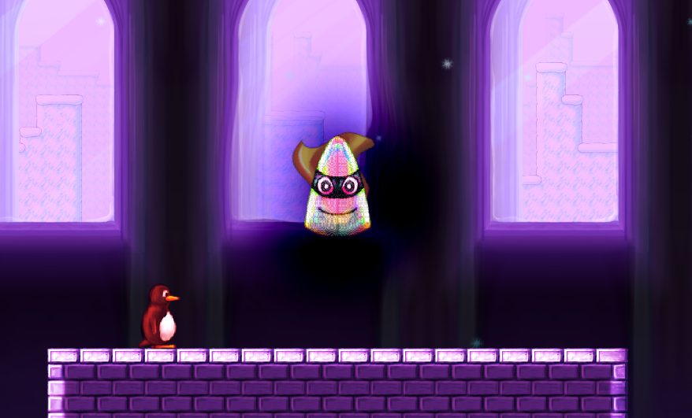
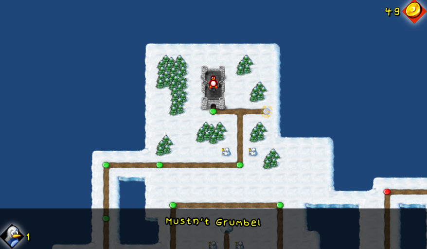
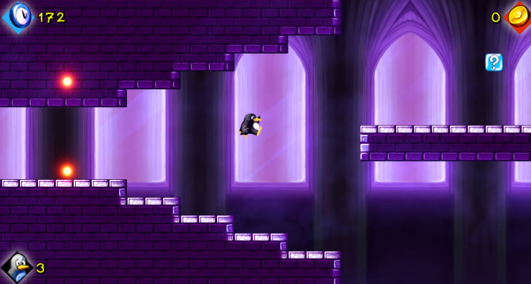
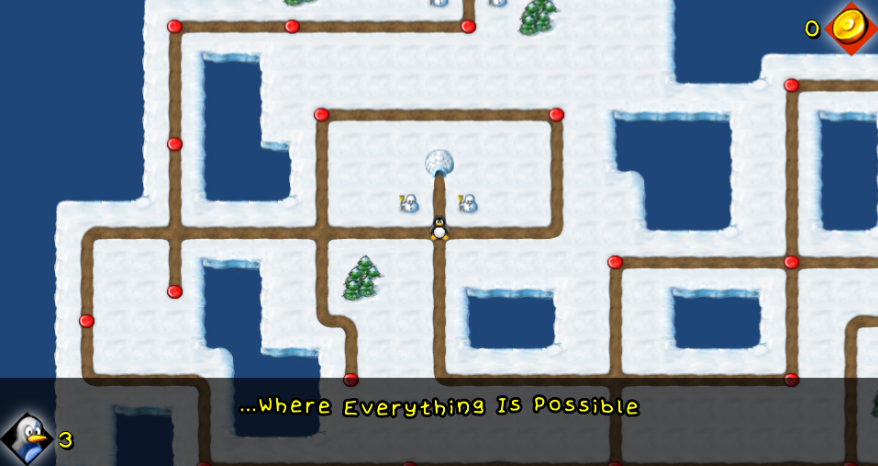
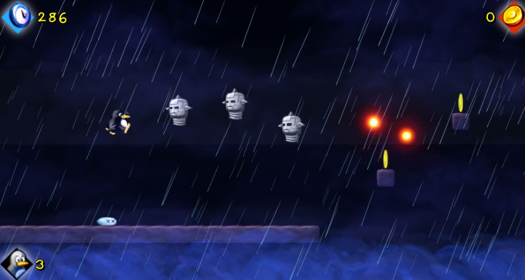
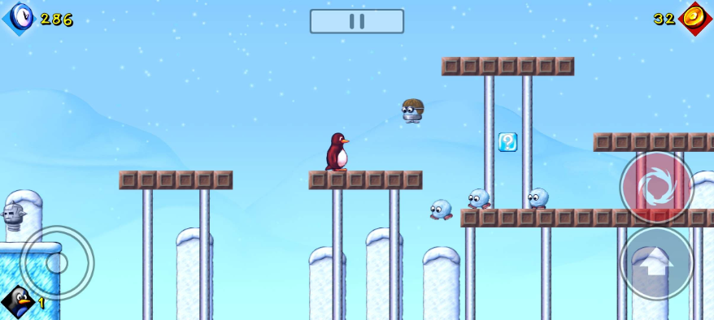
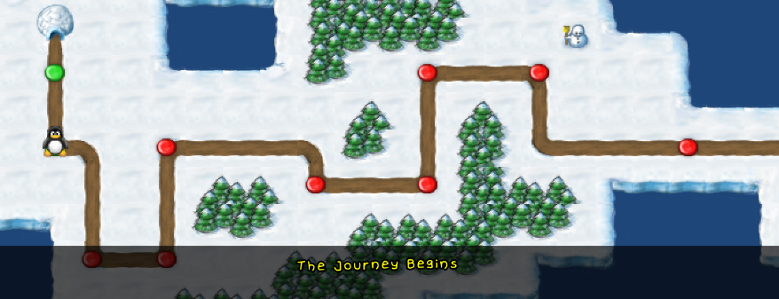

Apr 6, 2023
SuperTux Classic v0.3.1 is out!
New Boss Fight in Bonus Island II!
{kind=link}

{kind=link}
There is a new boss to fight at the end of Bonus Island II.
The boss may be moved to another world in the future - but for now it's in Bonus Island II.
I also introduced a bug where tux randomly dies 1% of the time apparently! 😂
Happy SuperTuxing!
Apr 2, 2023
SuperTux Classic v0.3.0 is out!
Bonus Island II is here!
{kind=link}

{kind=link}

{kind=link}
All of the levels (and worldmap) from Bonus Island II have been added into SuperTux Classic, as well as many features that were not present which needed to be added for these levels.
New features include:
- The fish enemy,
- Invisible blocks,
- Customisable level gravity,
- Autoscrolling levels,
- New tiles and tilesets, many of which are courtesy of RustyBox,
- Many new backgrounds,
- New music tracks, some of which were hand-restored.
- Being able to hit more than one block at a time with your head.
- Refactoring the save file system again (don't worry - this time your save files carry over), And more!
Bonus Island I is not added yet but will come later down the line.
Happy SuperTuxing!!
Mar 25, 2023
SuperTux Classic v0.2 is available!
Mobile Support is here!
{kind=link}
SuperTux Classic now has touch control support which will activate when using a touch screen or mobile device.
A few optimisations were also made to fix parts of the game which lagged previously on web and mobile devices, like the text scroll scenes.
Mar 23, 2023
SuperTux Classic v0.1 is done!
This is the big one.
Worldmaps are here!
{kind=link}
Worldmaps have been added into SuperTux Classic. This makes it possible to revisit levels you have completed.
World 1's worldmap is fully complete.
Not all worldmap features from SuperTux (i.e. Teleporters) work yet - they will need to be implemented to add Bonus Island I and II.
The way save files are saved and loaded has also changed to accommodate world maps, so previous save files will no longer work with this update.
You will need to create a new save file.
Mar 21, 2023
SuperTux Classic v0.0.2 is available!
This release mainly improves performance and adds polish/customisabilaty to the game.
Features include:- An options menu.
- Adjustable Music, Sound Effects, and Ambience volume sliders.
- Rebindable keyboard controls. (yay!)
- Backgrounds which used large tilesets now use images instead. This should improve performance a lot as now thousands less tiles will be rendering in levels which use the snow backgrounds.
Sep 23, 2022
SuperTux Classic v0.0.1 is available!
This release is a minor patch.
It adds:- A new icon for the game (a redrawn, higher resolution of the original icon).
- Keyboard support for all of the game's menus. (thanks SkyAce65!)
- HTML5 support so you can play the game in the browser! (may require further testing.)
Sep 16, 2022
SuperTux Classic is launched!
This is the first release of SuperTux Classic.
It contains:- All of World 1 (Icy Island)'s levels.
- Widescreen support, and support for multiple resolutions.
- Remastered sound effects and music from Milestone 1. They now sound a lot cleaner and are in stereo!
- New and improved art assets, some taken from future versions of SuperTux and Tux Builder, some created from scratch.
- Every enemy from SuperTux 0.1.3 except the fish.
- A completely new boss fight!
- Updates to the main story including new cutscenes!